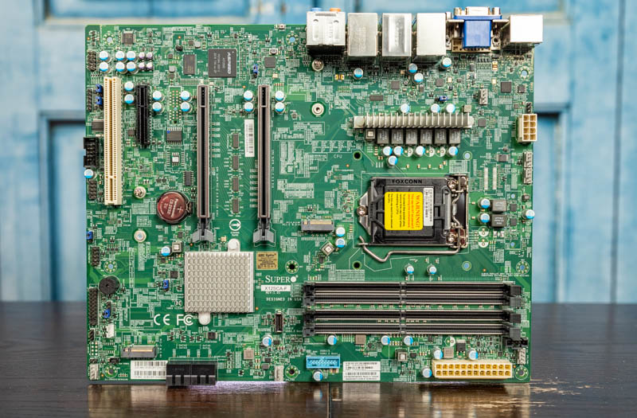
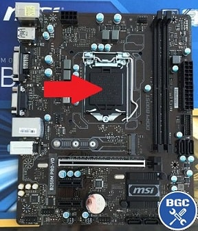
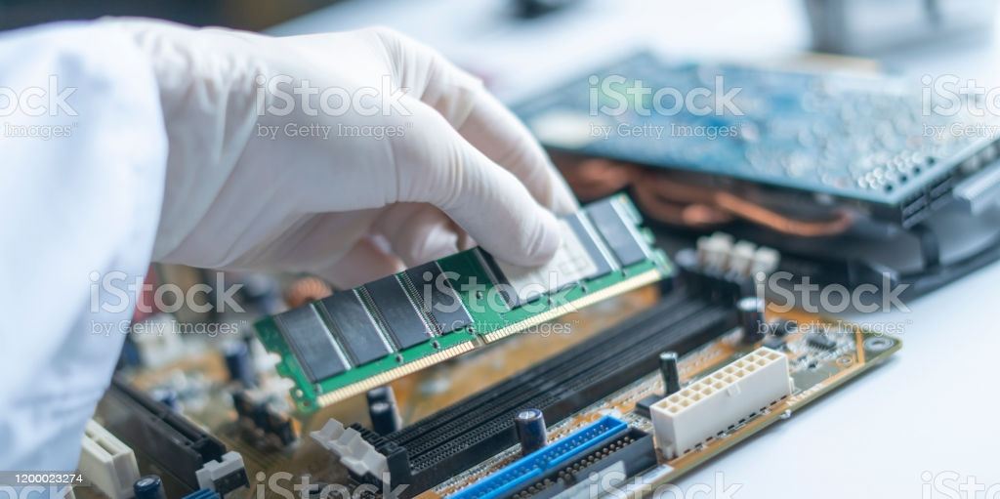
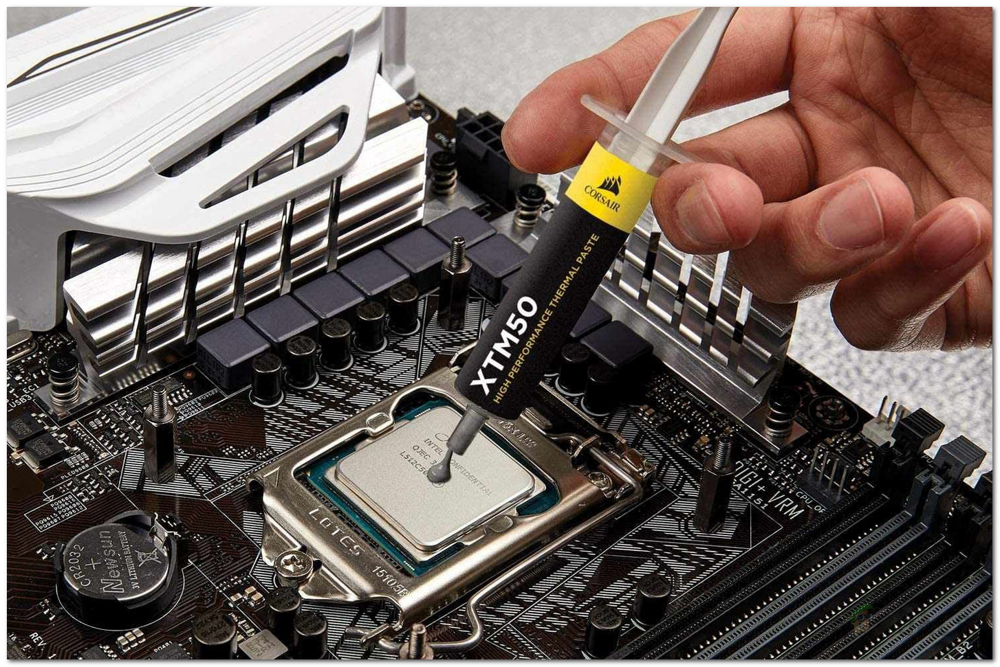
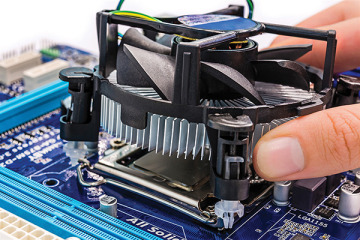
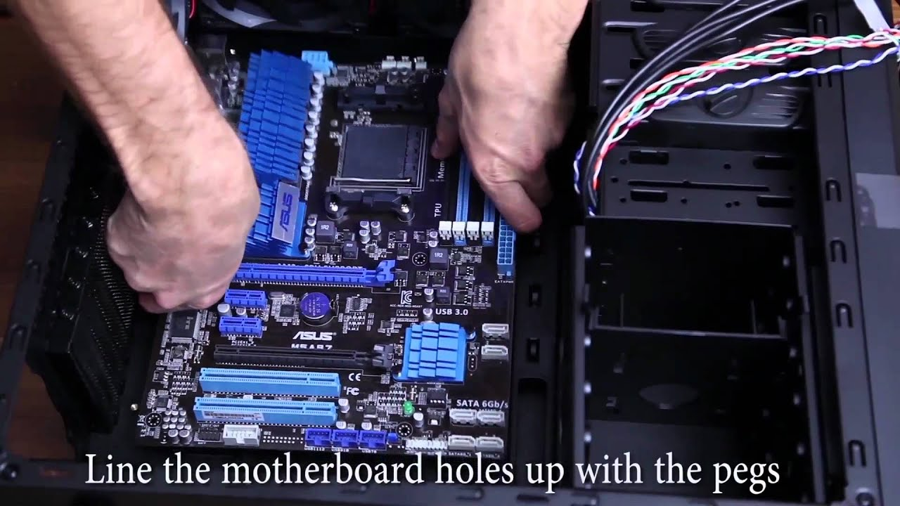
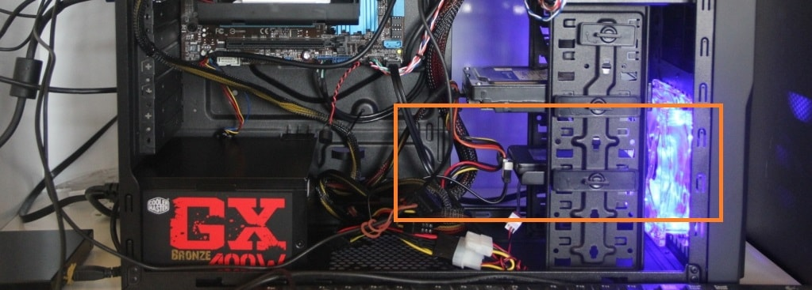
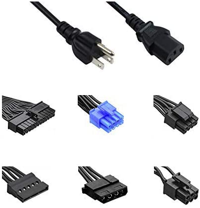
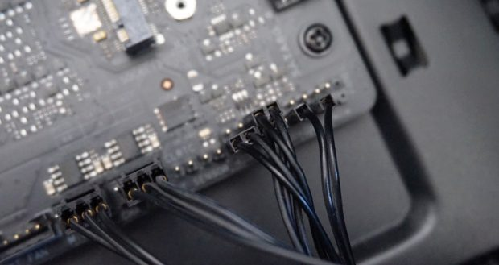
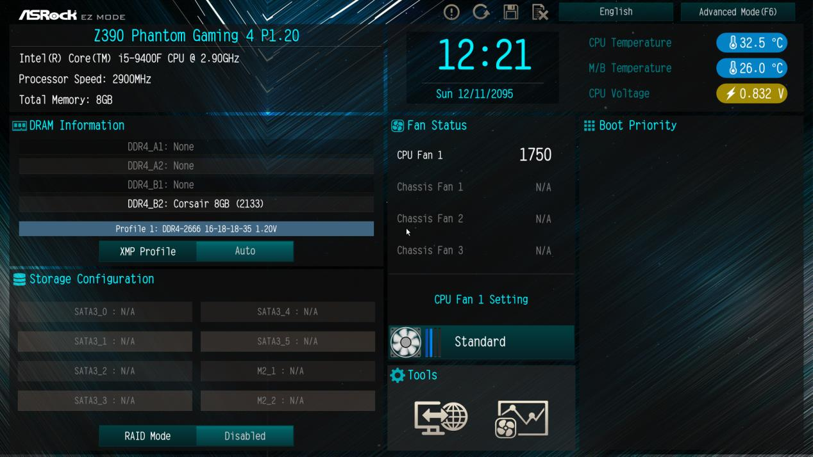

1) The first step is to lay the motherboard down in a static-free area such as a hardwood floor or table.
Make sure you have the manual in hand as motherboards differ in arrangement.

2) The second step is obtain your CPU. Identify the area where the processor is going to be placed
identifiable as the square with pins on the motherboard. Carefully place the processor into the socket as not to bend the
pins. Ensure the processor securely in the socket and lock the processor into place

3) Third step is to obtain the RAM sticks. Depending on the motherboard there are two to four RAM slits where the RAM can be placed.
If you are running pairs of RAM sticks and not using all four slots read the motherboard manual which slots should be priortized as
this does matter. Carefully place the RAM into the slots until a clicking noise is heard ensuring that the RAM is locked into place.
Do this for the rest of the RAM sticks as well.

4) Fourth is to obtain the fan for the CPU and the thermal paste. If you are using a liquid cooling system refer to your manual as it is more complicated than a regular fan
is. Apply the thermal paste to the surface of the CPU of no more than the size of a pea. Next carefully place the heat sink over the thermal paste pushing down on the fan ensuring
that the paste is spread onto the surface of the CPU. Screw the fan into the socket ensuring it tightly secured. Plug the fan into the motherboard as well.

5) Fifth step requires the case for the rest of the steps. Open the side of the case by unscrewing the back side and sliding the side off
the case. We will be placing the motherboard into the case matching the pegs of the case to the holes in the
motherboard. Screw the motherboard securely ensuring that the motherboard cannot wiggle.

6) Sixth obtain your power supply. Typically the power supply is placed at the bottom of the case in the back. Screw the power supply ensuring that that is
in the correct orientation with the case. Leave the power cables towards the end as there will be a lot of cables to deal with.

7) Seventh obtain your storage devices either the SSD or HDD. SSD and HDD are stored differently as they are different sizes, but both typically are stored
at the bottom of the case near the power supply. The HDD are stored in trays and can screwed in and the SSD can be located anywhere but generally in the
same location as the HDD. Screw them in securely that they are not wiggling. Connect the Sata cables that came with the storage devices to the motherboard.

8) If you do not have a graphics card then skip this step. Otherwise obtain your graphics card. There is a slot towards the back of the motherboard with a slot
similar to the RAM, but much longer. Remove the guard on the case as that will prevent the graphics card from going in. Place the graphics card into the slot
ensuring that a clicking noise is heard meaning that it has locked in.

9) Ninth head back to the power supply. There is going to be a lot of cables, but they should all be labeled. Review the manual if you are confused otherwise there
should be cables connecting storage devices, graphics card, motherboard, and CPU. There will be other cables depending what other peripherals the user has also
included into the system.

10) Tenth we are almost done here. The case also comes with its own wires that should also be labeled. Review the motherboard manual where these cables go
as each motherboard differs slightly. There will be a power cable, reset cable, usb cables, audio cables, lights, and so forth. These are typically found in
the bottom right of the motherboard as pins.

11) Finally we should have a working computer. Before putting the panel back on the case test if the computer turns on and goes into the bios. If the computer successfully
boots into the bios we can turn the computer back off and put the case back on. We now have a working computer!